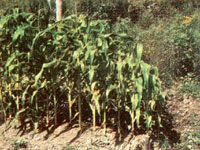
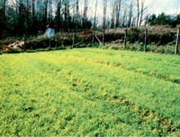
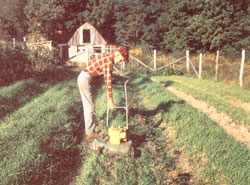

It was planting time, and my new garden was a soggy mess! During the previous (dry) fall, I'd dug up and de-stoned the entire 2,660-square-foot plot with a spading fork and then tilled in four trailerloads of manure. The soil should have been ripe and ready for growing, and I was looking forward to getting an early start on my vegetable raising.
But then I came face to face with spring - and springs! April's skies rained and rained and rained-so hard that little wetweather springs appeared here and there in my garden! When the deluge finally tapered off, I planted some peas and potatoes, but they prospered only in patches. And my bean seeds actually rotted in the ground (I had to start my second batch in trays).
Everything I raised-bush beans, corn, broccoli-grew in rows that were marked by stunted growth wherever they crossed wet areas. In fact, although sunnier weather finally dried much of my garden's surface, several trails of weak, yellowed plants still ran diagonally across the plot, marking the courses of underground streams.
I had to take action, so that fall I decided to [1] install drainpipes and [2] make raised beds. Working a couple of hours a day for about a week, I dug two trenches 18 inches deep by 45 feet long - one down each side of my garden. Then I laid 6-inch-diameter perforated drainage pipe in these troughs and covered them with hay, sand and gravel (to prevent clogging by the clay subsoil I used to finish filling the ditches). I extended these trenches beyond the fence at the bottom of my garden to dispose of the downgrade runoff and then dug an additional 8-inch-deep trench above the plot to divert surface runoff:
To shed any moisture my trenchwork didn't reroute, I decided to rebuild the garden into a series of long cross-slope beds with paths-or, more accurately, gutters-between them. I borrowed a heavy-duty, rear-tined tiller that had a furrow attachment with wing extensions capable of creating a trench 24 inches wide. I ran the tiller at low speed down my soon-to-be gutters and watched the newly tilled soil curl to both sides like waves before the prow of a ship. I raked these loose windrows of soil atop each bed, made another pass down the gutter with the winged tiller, raked a second time, and - just like that - I had eight long, 4-foot-wide beds with intervening ditches to carry surface water off, to the garden's sides. To put this re-formed plot to bed for winter, I spread manure on the rows and planted a rye cover crop.
The real test came the next spring - and my garden flunked! March, April and May each brought the highest monthly rainfall on record. The two drainpipes ran continuously, and the ditches between the rows shunted off more water, but still the garden was a bedwetting morass.
I figured I'd have to replace my shallow ditch at the top of the garden - there was no way it could accommodate the sheet watering produced by the hillside above it. So, starting as early as possible in spring, I dug an 18-inch-deep trench just inside the uphill fence. Sure enough, every few feet I discovered rivulets of water coursing along the top of the clay. They all combined to form a small stream that my new ditch diverted out of the garden.
At last the problem was solved. The two pipelines, the between-bed ditches, and my new above-garden trench drained the excess water so efficiently that vegetables grew profusely where they'd failed altogether the year before. As an example, my sodden first-year plot yielded only 4 1/2 pounds of shelled peas, but after completing my "waterproofing," I harvested plenty for fresh eating and put 15 pounds in the freezer!
Although the top-of-the-garden ditch worked fine through its initial growing season, the subsequent fall rains and winter freezes made its walls collapse in many places. That not only blocked drainage flow but also caused several of my garden's fence posts to tilt dangerously.
More work! This time I was determined to make a big ditch - about 80 feet long, 2 feet deep and 2 feet wide - and to set it well above the garden. It would have taken me almost forever to dig that more durable trench, so I felled some trees for a friend in exchange for his scooping out the ditch with a backhoe. I watched in happy amazement as in one hour he did a job that would have taken me weeks with a spade.
No sooner was that big ditch finished than underground water started to trickle down it. So nowadays, with that hillside-clearing ditch, my between-bed gutters and the underground drainage pipes, my garden has finally stopped wetting its beds-for good!
|
 MOTHER EARTH NEWS STAFF With a hillside-clearing ditch, between-bed gutters and underground drainage pipes, my garden has finally stopped wetting its beds - for good! |
 MOTHER EARTH NEWS STAFF |
 MOTHER EARTH NEWS STAFF |